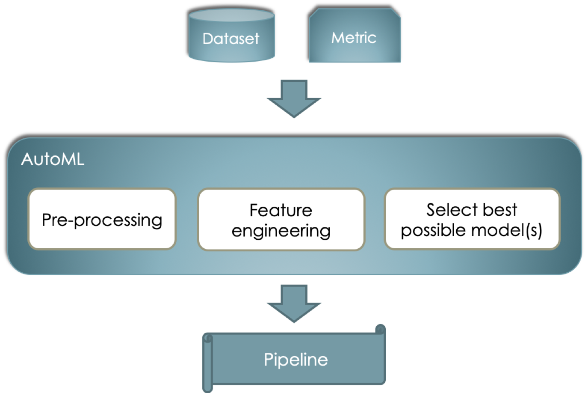

AutoML in a nutshell¶
Overview¶
In Machine Learning (ML) different approaches can be followed to solve a given problem, such as classification, regression, clustering, etc. Despite of the nature of this problem, a recurrent question when working on it is: which algorithm (or set of algorithms) should I use to come up with the best possible solution? The answer to this question is not always immediate and for non-experts or non-experienced machine learning practicioners it may become a cumbersome and exhausting task. In essence, Automated Machine Lerning (AutoML) tries to execute this task, without the need of an expert.
Particularly, when working with traditional ML such as classification, the problem can be understood as depicted in the image below. This is, given a datset and a metric to optimize on (e.g. accuracy, roc_auc, etc.) we would like to find a so called pipeline that may include data pre-processors, feature engineering algorithms and the best possible models (note the plural) that can work all together to provide a good as possible for the input.
{kind=link}
Of course, the problem can be understood as an optimization problem and can be addressed in many different ways such as Random Search or Grid Search - perhaps the most popular techniques due to their simplicity. These, however, are naive and expensive and more advanced techniques have been implemented with acceptable results. More resources on these techniques can be found here.
Given this overview, some natural questions that could come up are:
- Is it really possible to automate the selection of a “good” Machine Learning pipeline for any given problem?
- What if we just want to focus on a portion of the pipeline (e.g., just the model’s hyperparameters optimization)? Are there any alternatives?
- How can we help data scientists to learn from this automated selection?
These questions are the main focus of our work that is described in more detail in section Overview of our solution.
Note: AutoML for Deep Learning¶
Because of the different nature of Deep Learning (DL) - where hyper-parameters are continously recomputed during training - with respect to traditional ML - where parameters are static during all the training phase - one cannot generalize the problem up to this level of abstraction. Hence, different techniques are used such as the ones proposed in this page. However, this is out of the scope of our work.